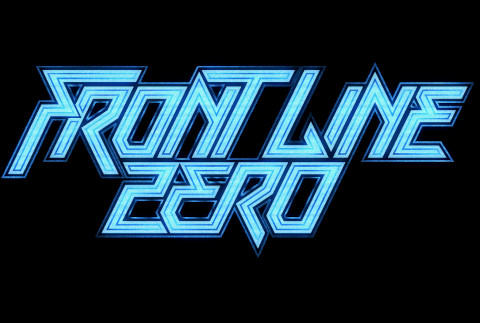
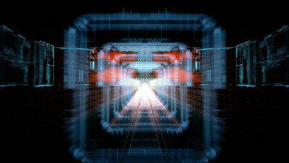
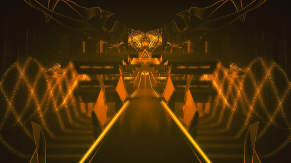
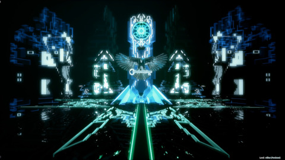
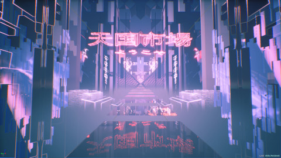

An Unreal Engine 4 cyberpunk rail-shooter indie game inspired by Rez.

Front Line Zero is a video game project started in late 2017 by the London-based company METATEK.
Founded by Dan Carter, VFX artist and Houdini specialist, the company's goal is to provide and promote novel audio-visual sensory experiences through the use of new technologies.
Greatly inspired by games such as Rez, Child of Eden or Thumper, that put the music and sound effects to the core of gameplay, I decided to join the team to work on the audioreactive game project Front Line Zero (code named XAO at first, found the final name myself).
The game is meant to be composed of ten rail-shooter levels with an emphasis on firing your weapons in sync with the rhythm of the music. Each interaction yielding a different procedural sound using a custom MIDI track for each level, it makes the creation of original melodies a core part of the gameplay experience.
Much like predecessors like Rez, each level is also going to embody a different variation on the game concepts, with a unique visual style and mechanics you need to defeat to complete the level.
To this day, Front Line Zero is still in active development.
Across the years, this project became very personal for me as I had a far-reaching influence on most steps of the development.
In general, most of our designs, work documents and source code are private. If you would like to have a sample of what I produced for the game, feel free to reach out to me by email or any other platform and I'll try to fulfill your request.




If you would like to know more :